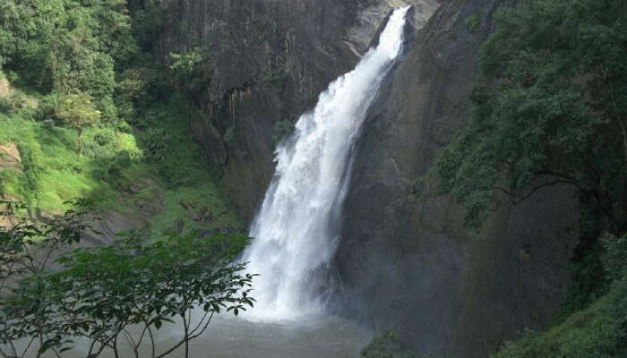

Dunhinda Waterfall (Badulla District)
Nature lovers and all those tourists wanting to explore some adventure won’t miss the 64-meters high Dunhinda Falls waterfall in Badulla, Sri Lanka. As this popular fall is located at a distance of fewer than 5 kilometers from the city area, tourists plan their visits at ease. Famous amongst all Sri Lankan waterfalls, this waterfall has gained immense popularity. In fact, it is also mentioned in some of the literary works. Local and international travelers ensure that Dunhinda Falls are added in their itineraries. It won’t be wrong to say that a Sri Lankan tour will remain incomplete without visiting this beautiful waterfall.
Kataragama Devalaya (Moneragala District)

Dedicating the Sinhalese deity Kataragama Deviyo, popular Sri Lankan ancient temple of Kataragama Devalaya remains a must visit the site in Badulla nowadays. It is historically important location that also reminds the golden past of this area. The temple site is enlisted into the Archeologically Protected Monuments list. History lovers find much to explore here and know more about this region’s past. Although the exact construction date is still unknown, some historians claim that it exists since the 17th century while the regional King Vimaladharmasuriya I ruled the Kingdom of Kandy to build this Devalaya. The Pilimageya or worshippers’ spot as shrine room is a most visited place inside this monument. Rich architecture of this monument through the carved timber columns the presence of Kandyan era paintings make it worth exploring place during a Sri Lankan tour.